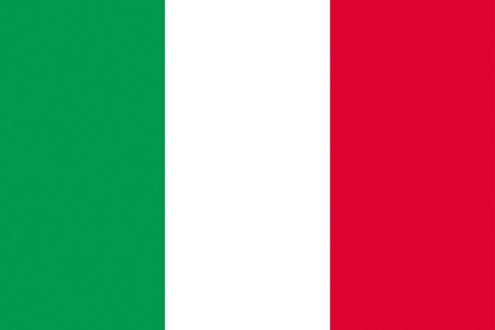

 Řím je jedno z nejstarších a nejvýznamnějších měst v historii lidstva. Byl centrem mocné římské říše, která ovládala velkou část Evropy, Afriky a Asie. Řím je také sídlem katolické církve a místem mnoha kulturních a uměleckých památek. Řím je nazýván věčným městem, protože jeho historie sahá až do 8. století př. n. l. a pokračuje až do současnosti.
- Řím je hlavní město Itálie
- Rozloha: 1 285 km²
- Počet obyvatel: 2 872 800
Zajímavosti
- Řím má více než 900 kostelů, což je nejvíce ze všech měst na světě
- Řím má také největší fontánu na světě, Fontánu di Trevi, která je vysoká 26 metrů a široká 49 metrů